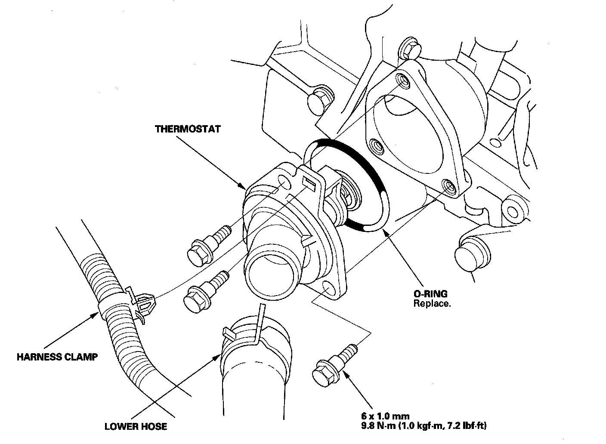

Thermostat: Service and Repair
Thermostat Replacement1. Drain the engine coolant.
2. Remove the splash shield.
3. Remove the lower hose, then remove the thermostat.

4. Install the thermostat with a new O-ring, then install the lower hose.
5. Install the splash shield.
6. Refill the radiator with engine coolant, and bleed the air from the cooling system with the heater valve open.